Manicure & nail designer no Centro de Joinville
Nail art alternativa, unha por unha
Alongamento, press on, esmaltação em gel e desenhos que saem do comum: preto, vinho, cromado, cruzes e cerejas.
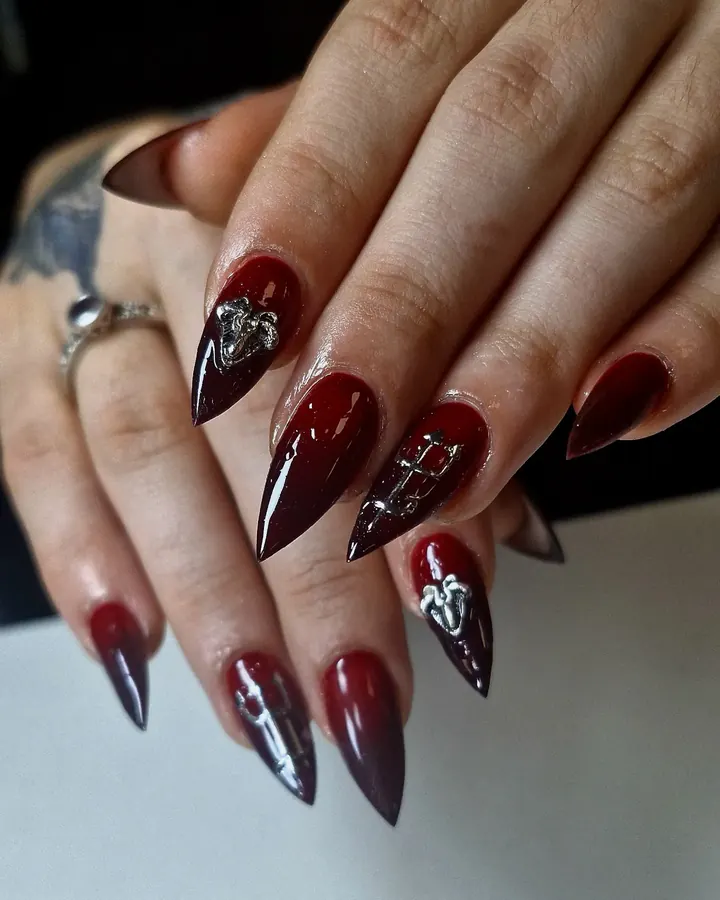
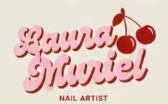
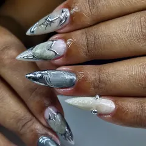
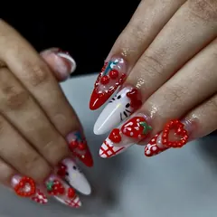
Eu sou nail designer e me considero artista.
Trabalhos
Fotos dos atendimentos que ela mesma publica. Cada mão sai diferente.
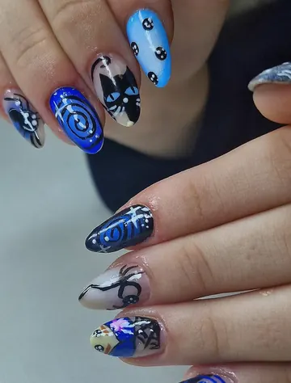
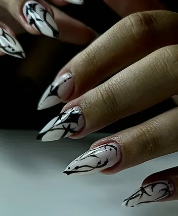
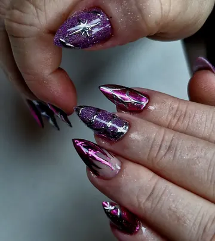
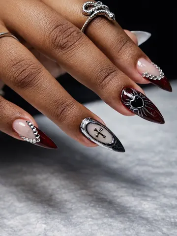
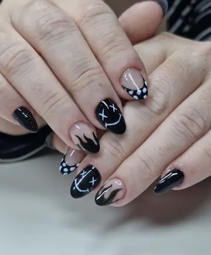
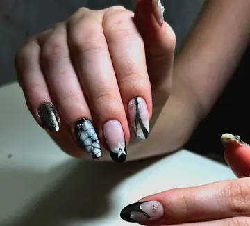
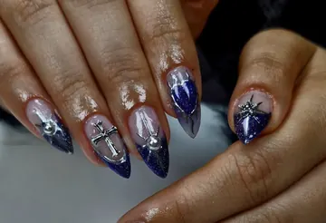
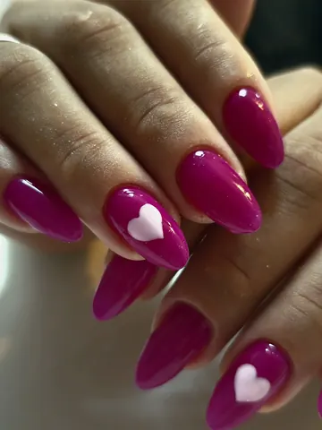
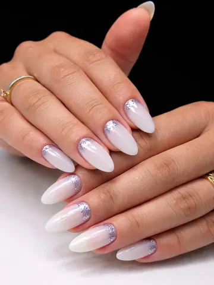
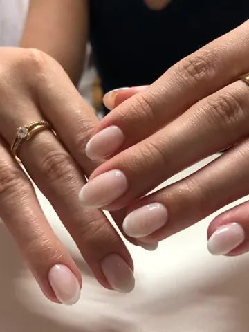
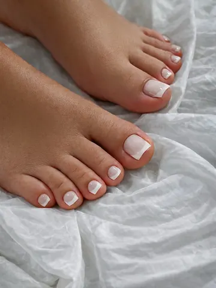
Serviços
Os mesmos que ela lista no perfil. Valores e horários, só pelo WhatsApp.
- Alongamento
- Unha alongada no formato que você quiser. Nas fotos dela aparecem muito stiletto e amendoado.
- Esmaltação em gel
- Cor lisa ou com desenho por cima.
- Nail art
- O que ela chama de arte: cromado, cruzes, teias, chamas, personagens, cerejas.
- Decorações e charms
- Peças em relevo e pingentes prateados, que ela anuncia como disponíveis.
- Press on
- Jogos de unhas prontos, montados na cartela.
- Tradicional
- Para quem quer o clássico, sem alongamento.
- Retornos
- A volta de quem já faz com ela.
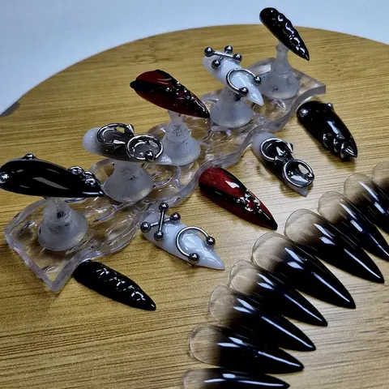
Press on
Unhas prontas, feitas antes e montadas na cartela. Dá para ir do preto com charm prateado ao colorido cheio de personagem.
Perguntar sobre press on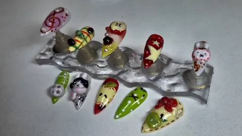
Bora marcar?
Manda a sua ideia ou uma foto de referência e combina tudo com ela pelo WhatsApp.
Agendar pelo WhatsApp- WhatsApp(47) 99916-7786
- Telefone(47) 99916-7786
- OndeCentro, Joinville (SC)